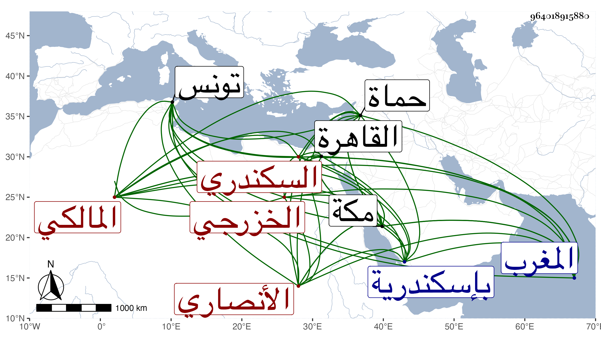

0902Sakhawi.DawLamic.ITO20230111-ara1.EIS1600.964018915880
Biography ID: 964018915880
1255
يوسف بن محمد بن علي بن محمد بن أحمد بن أبي القسم الجمال أبو المحاسن الأنصاري الخزرجي الفلاحي الأصل نسبة إلى الفلاحين بالتخفيف وآخره نون قرية من أعمال تونس من المغرب السكندري المالكي ويعرف بالفلاحي . ولد بعد فجر يوم الاثنين ثاني عشر ربيع الأول سنة تسع وثمانمائة بإسكندرية ومات أبوه وهو صغير فانتقل مع أمه إلى القاهرة فأكمل بها القرآن وتلا به لأبي عمرو من طريق الدوري خاصة على حبيب العجمي وحفظ الرسالة وغالب المختصر الفرعي وجميع ألفية ابن ملك ثم أقبل على الاشتغال في الفقه والعربية والحساب والفرائض وغيرها ، ومن شيوخه الجمال الأقفاصي والبساطي ثم أبو عبد الله الراعي وسمع الحديث على شيخنا والرشيدي في آخرين وصار في غضون ذلك يتردد إلى بلده ومن شيوخه بها الشهاب أحمد الصنهاجي وسعيد المهدوي والشريف الجزائري وزعم أنه سمع فيها الموطأ على الكمال بن خير وكذا الشفا بقراءة البرشكي في سنة خمس وعشرين ثم قطنها وناب عن قضاتها بل ولي مشيخة بعض مدارسها والخطابة ببعض جوامعها وحسبتها ولاه إياها تنم نائبها في سنة تسع وأربعين لمزيد اختصاصه به بحيث أنه سافر معه إلى حماة لما ولي نيابتها في سنة إحدى وخمسين ، وقد لقيته بمكة سنة ست وخمسين ثم بعدها ببلده وكتبت عنه بالموضعين أشياء بل كتب لي بخطه كراسة من نظمه ونثره ، وكان فاضلا مشاركا في فنون لكن الغالب عليه الأدب مع تواضع وخفة روح وسرعة حركة وتجوز فيما يبديه . مات في ثامن ذي الحجة سنة خمس وسبعين بمكة وتقدم البرهاني للصلاة عليه ثم دفن بباب المعلاة رحمه الله وعفا عنه ، ومما كتبته عنه قوله :
| وقائلة لي بعد الخمسين قد مضت | من العمر في شرب وسرب وأتراب |
| أرى فيك أخلاق الشباب وقد بدا | عذارك مسودا كلون غراب |
| فقلت لها لا تعجبين فإنما | سواد عذاري من سوالف أحبابي |
وكتب عنه البقاعي ما سقته في الوفيات .
